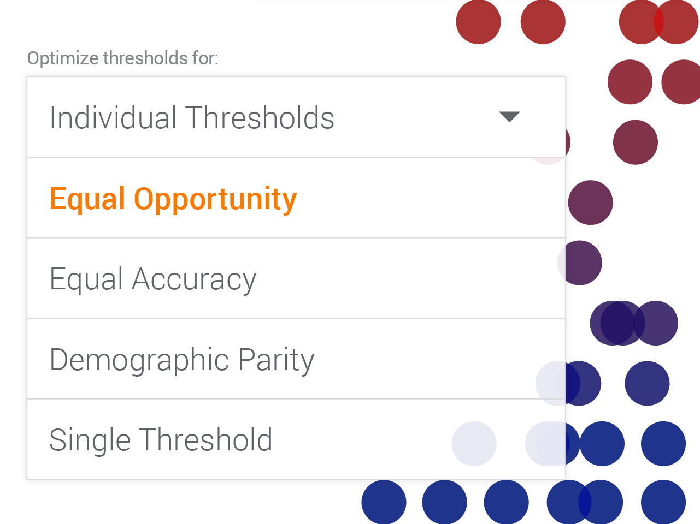

Playing with AI Fairness
Google's new machine learning diagnostic tool lets users try on five different types of fairness
Researchers and designers at Google's PAIR (People and AI Research) initiative created the What-If visualization tool as a pragmatic resource for developers of machine learning systems. Using the What-If tool reveals, however, one of the hardest, most complex, and most utterly human, questions raised by artificial intelligence systems: What do users want to count as fair?
There is currently — and rightfully — a sharp, global focus on making sure that AI doesn't perpetuate or, worse, exacerbate the unfairness of existing social systems. There are well-known cases where this has happened, and there's no doubt that cases are currently slipping past us all.
But there are two problems with the problem itself. First, as a culture we often lack consensus about which of the many types of fairness to apply. Second, each type of fairness requires both technical and non-technical decisions and trade-offs, some of which can be wrenching.
Spoiler: Fairness is very complex.
Varieties of fairness
What-If presents five buttons, each of which sorts the data according to a different type of fairness, based on mathematical measures.

How do they work? So, let's say you're a mortgage lender using a machine learning system to sort through loan applications, only 30 percent of which come from women. You appoint five respected ethicists, fairness activists, and customer advocates to figure out what gender mix of approved and denied applications would be fair.
By the end of the first meeting, the five members have discovered that each of them has a different idea of what's fair:
#1. Group unaware: What's fair, says Expert #1, is to totally disregard the gender mix of the applicants who are given loans. If no women at all make it into the pool, that's fair so long as people were chosen purely on their merits–what's sometimes called “group unaware” fairness. Otherwise, you'd have to kick out a qualified man to make room for a less qualified woman, because there are a limited number of approvals possible.
So, recommends Expert #1, the company should go to great lengths to exclude gender and gender-proxy information from the data set, and then go for the most accurate predictions of who will repay a loan. That means if the system has to be 60 percent certain that a man will pay back a loan in order to recommend approving his loan, it ought to be 60 percent certain about women as well, even if that were to mean, in the very worst case, that the Approved pile contains only applications from men. (In machine learning's vocabulary, 60 percent certainty about a classification is called a 0.6 confidence level.)
#2. Group thresholds: Expert #2 strongly disagrees with #1. Because of historical biases reflected in the data used to create the system's model, women can look less loan-worthy than men. For example, women's work histories are more likely to be interrupted by multi-month gaps – maternity leave, for example – and that might count against them in the machine learning system's model. So, we should be able to adjust the confidence thresholds for men and women independently. If that means we have to tell the machine that to put a man's application into the Approved pile requires a 0.6 confidence level that he will pay back a loan, but only a 0.3 confidence level that a woman will, so be it.
#3. Demographic parity: No, says Expert #3. The composition of the set of people who are granted loans should reflect the percentage of applicants: if 30 percent of the applicants are women, then 30 percent of the pool of approved applicants ought to be women.
#4. Equal opportunity: Expert #4 disagrees because if you just want equal proportions of men and women to get loans, you could randomly offer loans to women whether or not the individuals are good risks. Instead, it will be “Equal Opportunity” fairness if the same percentage of men and women who are likely to succeed at loans are given loans. What you don't want is for 90 percent of the male good risks to make it into the acceptance pile, but only 40 percent of the female good risks to do so.
Expert #4 goes on to argue that that meets the lender's objective of identifying loan-worthy applicants, but avoids favoring one gender over another in terms of risk. As Moritz Hardt, one of the leading researchers in the field of fairness in machine learning, puts it: “[I]ndividuals who qualify for a desirable outcome should have an equal chance of being correctly classified for this outcome.”
#5. Equal accuracy: Expert #5 thinks Expert #4 was on the right track, but instead of making sure that the genders end up with the same percentage of successes (i.e., people who pay back the loan), each gender should instead have the same percentage of people who were rightly judged as loan-worthy or who were rightly judged as not loan-worthy. That is, the percentage of right classifications (as loan-worthy or as not) should be the same for both genders.
Expert #5 recognizes that this is confusing, so she goes on to contrast #4's idea and hers:
If we use the Equal Opportunity approach espoused by Expert #4, the system will be wrong about who it approves — they don't pay back their loans — the same percentage of the time regardless of gender. But suppose it turns out that among the people the system has rejected, it's wrong about women twice as often as it's wrong about men. In such a case, more women than men who deserved loans are being denied. So, argues #5, the system ought to be tuned so that the percentage of times it's wrong in the total of approvals and denials is the same for both genders.
As the morning breaks, the five experts are still collegially arguing, finding situations in which each of these ideas of fairness is appropriate for the system, based on the results of adjustments to the machine learning model...
These are far from the only varieties of fairness. And while What-If offers users these options, there are external factors (societal context, downstream effects) that affect fairness beyond what is captured in the tool.
Which sense of fairness is the fairest in the land? There is no one right answer, but we probably can agree that humans, not computers, are the ones who should answer this question.
That's why What-If lets us play “what if” with theories of fairness, see the trade-offs, and make the difficult decisions that only humans can make.
Learn more about the What-If tool and how it works on the Google AI blog.